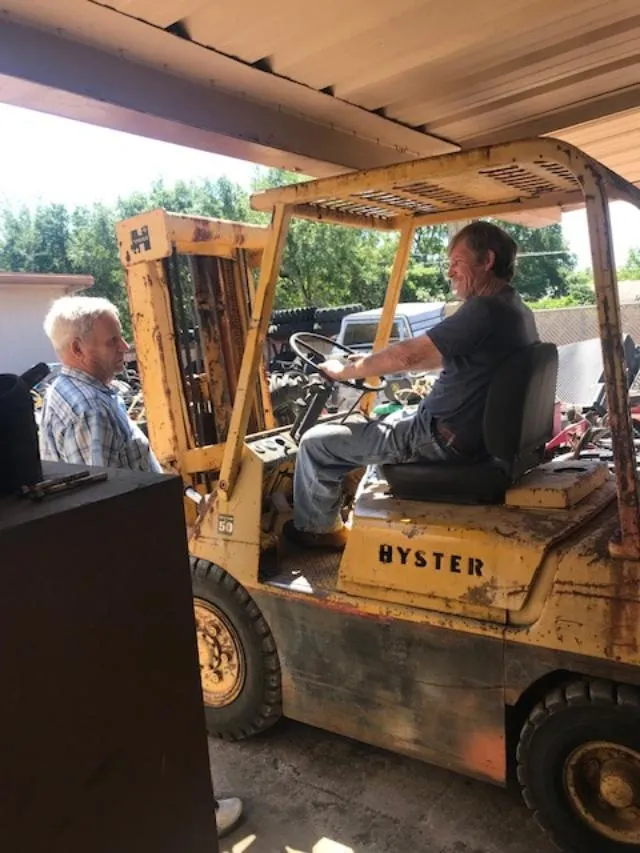
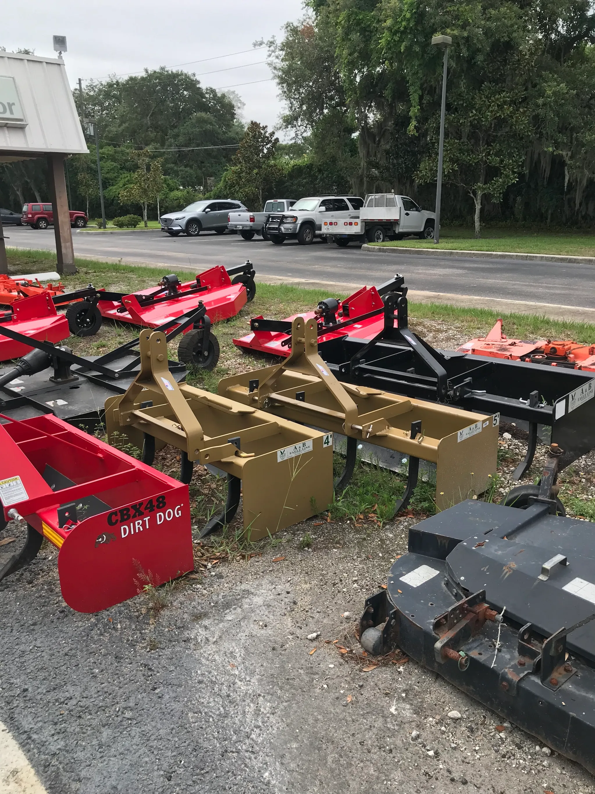
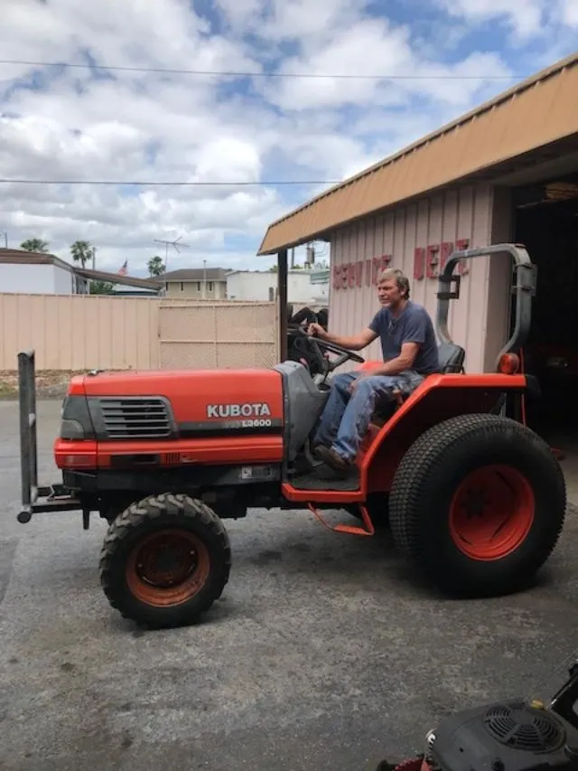

Our Story
Since 1972
Same lot. Same family. Same standard of work.
How It Started
Don & Nancy Martin, 1972
Don Martin opened Maitland Tractor in 1972 with a simple idea: know the equipment, do honest work, and charge a fair price. Nancy ran the business side. Together they built something that Central Florida’s farming community came to depend on.
This was a different Florida back then. Agricultural land stretched in every direction from what is now a fully developed suburb. Farmers, landscapers, and property owners all needed someone who could keep their equipment running — and who wouldn’t take advantage of them when it went down. The Martins became that someone.
They were never the biggest shop in the county. That was never the point. The point was doing good work and being there when people needed them. Over fifty years later, that description still fits.

At the shop · Maitland, Florida
The same phone number has been ringing here since Gerald Ford was president. That kind of consistency doesn’t happen by accident.
Maitland Tractor Sales & Service — Est. 1972

The lot — 9225 S US Hwy 17/92
The Location
One Address. Over Fifty Years.
The shop at 9225 S US Highway 17/92 has been the anchor of this business from day one. While Maitland changed around it — the orange groves gave way to subdivisions, the road got busier, the county grew — the shop stayed put.
That kind of stability is worth something. When you call, you’re calling the same place your neighbor called twenty years ago. When you stop by, you’re walking into a shop that has accumulated five decades of parts knowledge, supplier relationships, and hands-on experience.
Today
The Tradition Continues
Randy runs the shop today. The name on the sign is the same. The address is the same. The work ethic that Don and Nancy built this place on is the same. What’s also the same: when you call with a tractor problem, you’re talking to someone who actually knows what they’re doing — not a call center, not a franchise location, not a technician reading from a diagnostic flowchart.
The equipment has changed. The brands have evolved. But the fundamentals of keeping a diesel tractor running haven’t changed as much as people think, and neither has the value of a shop that’s been watching them long enough to know the difference.
When your tractor’s broke, you need someone who takes that seriously. We always have.

Randy · Maitland Tractor Sales & Service
Visit Us
9225 S US Hwy 17/92
Maitland, Florida 32751
Hours
Mon–Fri: 8am–5pm
Saturday: 8am–12pm · Sunday: Closed